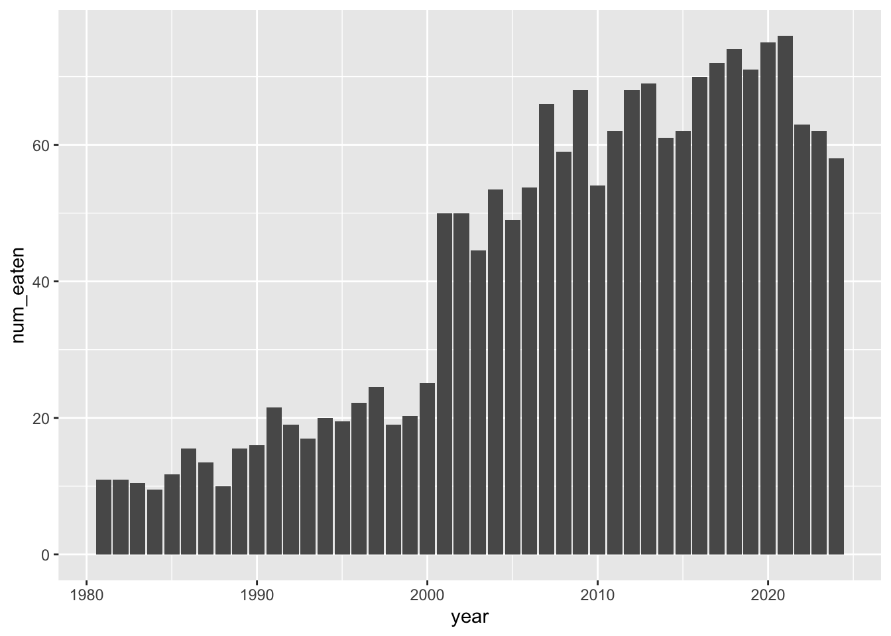
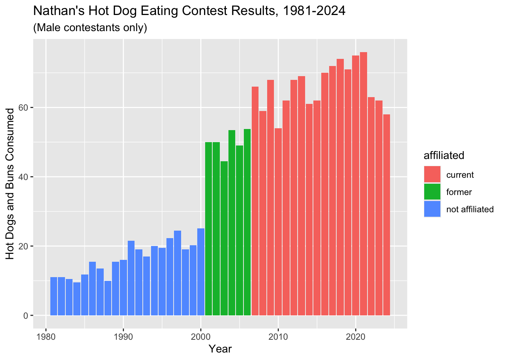
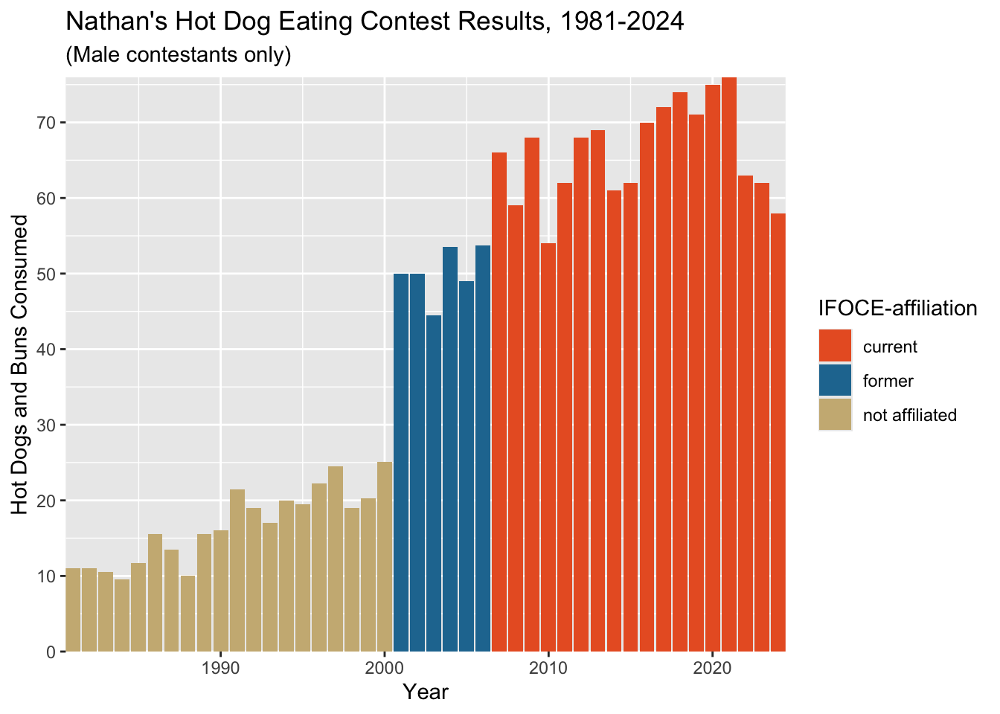
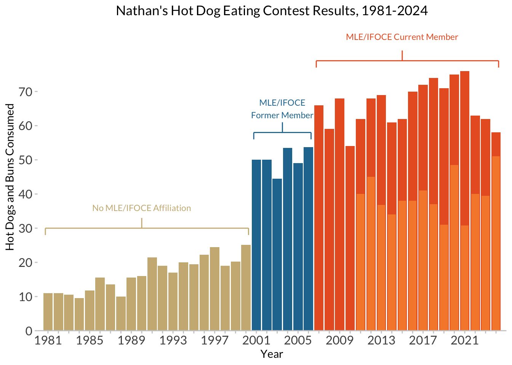
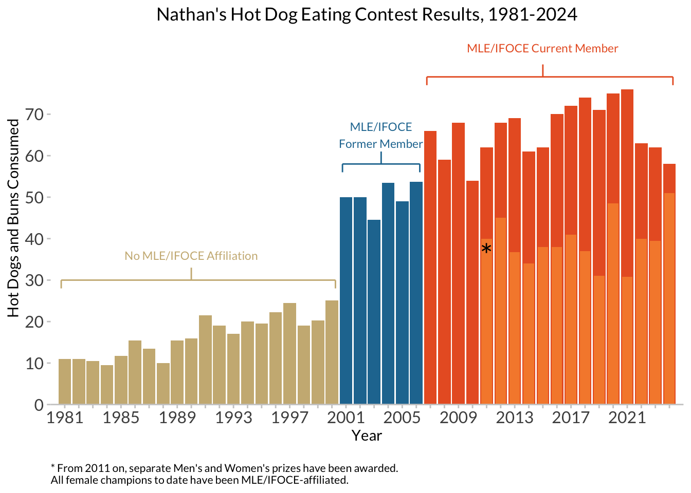

Goals for Lab 01
- Get your feet wet!
- Innoculate you against
ggplot2 errors- we all get
them!
- Get exposed to the range of things you can do, before we go
deep…
- Develop your own personal preferences for
data visualizations!
- Do you like or hate gridlines?
- What fonts do you find pleasant to read?
- What kinds of colors do you like?
- Are you team
theme_gray or theme_bw (or
theme_minimal)?
These are important questions, and I want you to develop
(well-informed) opinions on these matters! 
Most of the things we cover today, we will be re-visiting later in
the term; you are not expected to be familiar with all of the R
functions or patterns that we are using.
Other things to think about for this lab:
- Try not to copy-and-paste code:
- Becoming efficient/proficient with R depends on building muscle
memory, and the only way to do that is to type
- By typing, you will introduce errors, and this is a good
chance to get practice at interpreting and fixing them.
- Take note of steps or functions that involve bits of R that you are
unfamiliar with- this lab will help you identify particular areas that
you are comfortable with as well as areas you will want to focus
on.
Nathan’s Hot Dog Eating
Contest

This includes a reconstruction of Nathan
Yau’s hot dog contest example, as interpreted by Jackie Wirz, ported
into R and ggplot2 by Steven Bedrick for a workshop for the
OHSU Data
Science Institute, and finally adapted, made idiomatic, and improved
by Alison Hill for all you intrepid Data-Viz-onauts!
First, we load our packages:
library(tidyverse)
library(extrafont)
library(here)
Read in and wrangle
data
Next, we load some data. In the Posit Cloud project for this lab, you
will see a data directory with the necessary files. We can
read it in using read_csv, and along the way use
col_factor to tell it how to handle the gender column.
hot_dogs <- read_csv(here::here("data", "hot_dog_contest.csv"),
col_types = cols(
gender = col_factor(levels = NULL)
))
Validation
Check it out, once it is read in, and make sure it looks like
this!
glimpse(hot_dogs)
Rows: 59
Columns: 4
$ year <dbl> 2022, 2022, 2021, 2021, 2020, 2020, 2019, 2019, 2018, 2018, …
$ gender <fct> male, female, male, female, male, female, male, female, male…
$ name <chr> "Joey Chestnut", "Miki Sudo", "Joey Chestnut", "Michelle Les…
$ num_eaten <dbl> 63.00, 40.00, 76.00, 30.75, 75.00, 48.50, 71.00, 31.00, 74.0…
hot_dogs
# A tibble: 59 × 4
year gender name num_eaten
<dbl> <fct> <chr> <dbl>
1 2022 male Joey Chestnut 63
2 2022 female Miki Sudo 40
3 2021 male Joey Chestnut 76
4 2021 female Michelle Lesco 30.8
5 2020 male Joey Chestnut 75
6 2020 female Miki Sudo 48.5
7 2019 male Joey Chestnut 71
8 2019 female Miki Sudo 31
9 2018 male Joey Chestnut 74
10 2018 female Miki Sudo 37
# … with 49 more rows
At this point, follow the HLO process and familiarize yourself with
the columns and their contents. Questions to ask:
- Are the types of the columns what you would expect? Note that this
requires that you have some notion of what to expect! Possible things to
think about:
- What type makes sense for a column representing a year?
- What about the
num_eaten column?
- What about the
gender column? What assumptions
- What are the minimum and maximum values in the numeric columns? Are
the values in the range you would expect?
- Are there any missing values?
In addition to glimpse(), try loading (not installing)
the skimr package and using its skim()
function on the hot_dogs data frame.
Adding a
variable
In addition to the information that is already in the
dataset itself, we know that we will also be wanting to somehow include
information about whether a given year was before or after the
incorporation of the competitive eating league. Let’s add an
indicator variable to the data using mutate().
Also, the data’s a little sketchy pre-1981, and for our purposes today
we’ll be focusing on males only, so let’s do some
filtering, as well:
hot_dogs <- hot_dogs %>%
mutate(post_ifoce = year >= 1997) %>%
filter(year >= 1981 & gender == 'male')
hot_dogs
# A tibble: 42 × 5
year gender name num_eaten post_ifoce
<dbl> <fct> <chr> <dbl> <lgl>
1 2022 male Joey Chestnut 63 TRUE
2 2021 male Joey Chestnut 76 TRUE
3 2020 male Joey Chestnut 75 TRUE
4 2019 male Joey Chestnut 71 TRUE
5 2018 male Joey Chestnut 74 TRUE
6 2017 male Joey Chestnut 72 TRUE
7 2016 male Joey Chestnut 70 TRUE
8 2015 male Matthew Stonie 62 TRUE
9 2014 male Joey Chestnut 61 TRUE
10 2013 male Joey Chestnut 69 TRUE
# … with 32 more rows
Plot The Data
Now let’s try making a first crack at a plot:
ggplot(hot_dogs, aes(x = year, y = num_eaten)) +
geom_col()

Note that our data is already in “counted” form, so we’re using
geom_col() instead of geom_bar().
We will now progressively improve this visualization, one step at a
time.
Add Axis Labels And
Title
ggplot(hot_dogs, aes(x = year, y = num_eaten)) +
geom_col() +
labs(x = "Year", y = "Hot Dogs and Buns Consumed") +
ggtitle("Nathan's Hot Dog Eating Contest Results, 1981-2022", subtitle = "(Male contestants only)")

Play With Colors
Challenge #1:
Make 3 versions of the last plot we just made:
- In the first, make all the columns outlined in
“white”.
- In the second, make all the columns outlined in
“white” and filled in “navyblue”.
- In the third, make all the columns outlined in
“white” and filled in according to whether or not
post_ifoce is TRUE or FALSE (use default colors for
now).
HINT: color and fill are two of
ggplot’s aesthetic mapping variables (i.e., “things about
how the plot looks that we get to specify”)
ggplot(hot_dogs, aes(x = year, y = num_eaten)) +
geom_col(colour = "white") +
labs(x = "Year", y = "Hot Dogs and Buns Consumed") +
ggtitle("Nathan's Hot Dog Eating Contest Results, 1981-2022", subtitle = "(Male contestants only)")

ggplot(hot_dogs, aes(x = year, y = num_eaten)) +
geom_col(colour = "white", fill = "navyblue") +
labs(x = "Year", y = "Hot Dogs and Buns Consumed") +
ggtitle("Nathan's Hot Dog Eating Contest Results, 1981-2022", subtitle = "(Male contestants only)")

ggplot(hot_dogs, aes(x = year, y = num_eaten)) +
geom_col(aes(fill = post_ifoce), colour = "white") +
labs(x = "Year", y = "Hot Dogs and Buns Consumed") +
ggtitle("Nathan's Hot Dog Eating Contest Results, 1981-2022", subtitle = "(Male contestants only)")
Challenge #2:
What if you want to change the legend in the last plot you made? Use
google to figure out how to do the following:
- Delete the legend title
- Make the legend text either “Post-IFOCE” or “Pre-IFOCE”.
HINT: in ggplot, legends are controlled by the relevant
scale (color, fill, etc.) that they are mapped to.
ggplot(hot_dogs, aes(x = year, y = num_eaten)) +
geom_col(aes(fill = post_ifoce), colour = "white") +
labs(x = "Year", y = "Hot Dogs and Buns Consumed") +
ggtitle("Nathan's Hot Dog Eating Contest Results, 1981-2022", subtitle = "(Male contestants only)") +
scale_fill_discrete(name = "",
labels=c("Pre-IFOCE", "Post-IFOCE"))

Change The Dataset
Now, let’s change the question a little bit. Up to this point, we
have looked at HDB performance relative to the creation of the
IFOCE. What if what matters is the affiliation of the
contestants (i.e., whether or not the contestants are members of the
IFOCE or not)? We’ll need some different data for this. Through the
Magic Of Data Science™, we have dug that information up and put
it into an expanded version of our CSV file, which you can find in the
data directory.
Challenge #3:
Let’s work with this new dataset! Do the following:
Read in the “hot_dog_contest_with_affiliation.csv” data file,
using col_types to read in affiliated and
gender as factors.
Within a mutate, create a new variable called
post_ifoce that is TRUE if year is greater
than or equal to 1997.
Also filter the new data for only years 1981 and
after, and only for male competitors.
hdm_affil <- read_csv(here::here("data", "hot_dog_contest_with_affiliation.csv"),
col_types = cols(
affiliated = col_factor(levels = NULL),
gender = col_factor(levels = NULL)
)) %>%
mutate(post_ifoce = year >= 1997) %>%
filter(year >= 1981 & gender == "male")
hdm_affil <- read_csv(here::here("data", "hot_dog_contest_with_affiliation.csv"),
col_types = cols(
affiliated = col_factor(levels = NULL),
gender = col_factor(levels = NULL)
)) %>%
mutate(post_ifoce = year >= 1997) %>%
filter(year >= 1981 & gender == "male")
glimpse(hdm_affil)
Rows: 42
Columns: 6
$ year <dbl> 2022, 2021, 2020, 2019, 2018, 2017, 2016, 2015, 2014, 2013,…
$ gender <fct> male, male, male, male, male, male, male, male, male, male,…
$ name <chr> "Joey Chestnut", "Joey Chestnut", "Joey Chestnut", "Joey Ch…
$ num_eaten <dbl> 63.000, 76.000, 75.000, 71.000, 74.000, 72.000, 70.000, 62.…
$ affiliated <fct> current, current, current, current, current, current, curre…
$ post_ifoce <lgl> TRUE, TRUE, TRUE, TRUE, TRUE, TRUE, TRUE, TRUE, TRUE, TRUE,…
Challenge #4:
Let’s do some basic EDA with this new dataset! Do the following:
Use dplyr::distinct to figure out how many unique
values there are of affiliated.
Use dplyr::count to count the number of rows for
each unique value of affiliated; use ?count to
figure out how to sort the counts in descending order.
hdm_affil %>%
distinct(affiliated)
# A tibble: 3 × 1
affiliated
<fct>
1 current
2 former
3 not affiliated
hdm_affil %>%
count(affiliated, sort = TRUE)
# A tibble: 3 × 2
affiliated n
<fct> <int>
1 not affiliated 20
2 current 16
3 former 6
Now let’s plot this new data, and fill the columns according to our
new affiliated column.
ggplot(hdm_affil, aes(x = year, y = num_eaten)) +
geom_col(aes(fill = affiliated)) +
labs(x = "Year", y = "Hot Dogs and Buns Consumed") +
ggtitle("Nathan's Hot Dog Eating Contest Results, 1981-2022", subtitle = "(Male contestants only)")

Challenge #5:
Do the following updates to the last plot we just made:
Update the colors using hex colors:
c('#E9602B','#2277A0','#CCB683').
Change the legend title to “IFOCE-affiliation”.
Save this plot object as “affil_plot”.
affil_plot <- ggplot(hdm_affil, aes(x = year, y = num_eaten)) +
geom_col(aes(fill = affiliated)) +
labs(x = "Year", y = "Hot Dogs and Buns Consumed") +
ggtitle("Nathan's Hot Dog Eating Contest Results, 1981-2022", subtitle = "(Male contestants only)") +
scale_fill_manual(values = c('#E9602B','#2277A0','#CCB683'),
name = "IFOCE-affiliation")
affil_plot

Play With Scales &
Coordinates
Now that the bones of the plot are in place, it’s time to tweak the
details.
The spacing’s a little funky down near the origin of the plot. The documentation
tells us that the defaults are c(0.05, 0) for continuous
variables. The first number is multiplicative and the second is
additive.
The default was that 2.05 ((2022-1981)*.05+0) was added to the right
and left sides of the x-axis as padding, so the effective default limits
were c(1979, 2024).
Let’s tighten that up with the expand property for the
scale_y_continuous (we’ll also change the breaks for y-axis
tick marks here) and scale_x_continuous settings:
affil_plot <- affil_plot +
scale_y_continuous(expand = c(0, 0),
breaks = seq(0, 70, 10)) +
scale_x_continuous(expand = c(0, 0))
affil_plot

That is perhaps too tight; note the lack of any space
between the bars and the y-axis on hte left.
Let’s loosen things up a bit by updating the plot coordinates.
Using coord_cartesian is the preferred layer here
because (from the coord_cartesian documentation): “setting
limits on the coordinate system will zoom the plot (like you’re looking
at it with a magnifying glass), and will not change the underlying data
like setting limits on a scale will.”
In other words, setting limits will actually result in
individual data points being included or excluded from the plot based on
whether they fall within the specified limits, which could have
unanticipated effects (for example, if your plot includes a line fit,
that line fit will be done using only the included data rather than all
of your data).
Lesson:
Don’t directly change limits unless you really know what
you are doing! Most of the time, you want to change the coordinates
instead, and do any data point filtering outside of your plotting.
affil_plot <- affil_plot +
coord_cartesian(xlim = c(1980, 2023), ylim = c(0, 80))
affil_plot
Play With Theme
Settings
We will talk a lot more about themes and ggplot later in
the term, but for now, the important thing to know is that most visual
aspects of the plot have a name (e.g. plot.title),
and the theme() function lets us tell ggplot
what any named part
of the plot should look like.
Let’s change some key theme settings:
affil_plot +
theme(plot.title = element_text(hjust = 0.5)) +
theme(axis.text = element_text(size = 12)) +
theme(panel.background = element_blank()) +
theme(axis.line.x = element_line(color = "gray80", size = 0.5)) +
theme(axis.ticks = element_line(color = "gray80", size = 0.5))
Warning: The `size` argument of `element_line()` is deprecated as of ggplot2 3.4.0.
ℹ Please use the `linewidth` argument instead.
This warning is displayed once every 8 hours.
Call `lifecycle::last_lifecycle_warnings()` to see where this warning was
generated.

Lesson:
You can change almost anything that your heart desires to
change!
By default, plot titles in ggplot2 are left-aligned. For
hjust:
0 == left0.5 == centered1 == right
We could also save all these as a custom theme. We are not fans of
the default font, so we are also going to change this. To do this, you
need to install the (extrafont package)[https://github.com/wch/extrafont] and follow its setup
instructions before doing this next step.
hot_diggity <- theme(plot.title = element_text(hjust = 0.5),
axis.text = element_text(size = 12),
panel.background = element_blank(),
axis.line.x = element_line(color = "gray80", size = 0.5),
axis.ticks = element_line(color = "gray80", size = 0.5),
text = element_text(family = "Lato") # need extrafont for this
)
affil_plot + hot_diggity
We could also use someone else’s theme:
library(ggthemes)
affil_plot + theme_fivethirtyeight(base_family = "Lato")

affil_plot + theme_tufte( base_family = "Palatino")
The final thing we have to mess with is the x-axis ticks and labels.
We’ll do this in two steps, then override our previous layer
scale_x_continuous.
# manually compute a list of years that we want labeled...
years_to_label <- seq(from = 1981, to = 2022, by = 4)
years_to_label
[1] 1981 1985 1989 1993 1997 2001 2005 2009 2013 2017 2021
# add a column to the dataframe containing what we want each year's label to be
hd_years <- hdm_affil %>%
distinct(year) %>%
mutate(year_lab = ifelse(year %in% years_to_label, year, ""))
# manually tell ggplot what to use for breaks and labels
affil_plot +
hot_diggity +
scale_x_continuous(expand = c(0, 0),
breaks = hd_years$year,
labels = hd_years$year_lab)
Scale for x is already present.
Adding another scale for x, which will replace the existing scale.

Final (final, final)
version
Don’t name your files “final” :)

All together in one chunk, here is our final (for now) plot! I’m also
adding some additional elements here to show you options:
nathan_plot <- ggplot(hdm_affil, aes(x = year, y = num_eaten)) +
geom_col(aes(fill = affiliated)) +
labs(x = "Year", y = "Hot Dogs and Buns Consumed") +
ggtitle("Nathan's Hot Dog Eating Contest Results, 1981-2022", subtitle = "(Male contestants only)") +
scale_fill_manual(values = c('#E9602B','#2277A0','#CCB683'),
name = "IFOCE-affiliation") +
hot_diggity +
scale_y_continuous(expand = c(0, 0),
breaks = seq(0, 70, 10)) +
scale_x_continuous(expand = c(0, 0),
breaks = hd_years$year,
labels = hd_years$year_lab) +
coord_cartesian(xlim = c(1980, 2023), ylim = c(0, 80))
nathan_plot

The fill legend is doing its job, here, but we might instead want to
use direct annotations on the plot itself, to make it easier and faster
to read.
ggplot will let us add annotatations to the
plot- i.e., extra text, lines , etc. that are not derived from the data
in the plot, but are manually specified - using the
annotate() function, which adds additional layers to the
plot. The way we are doing it below is a bit tedious, but demonstrates
how it works.
nathan_ann <- nathan_plot +
guides(fill="none") + # turn off the legend/guide for the "fill" aesthetic
coord_cartesian(xlim = c(1980, 2023), ylim = c(0, 90)) +
annotate('segment', x=1980.75, xend=2000.25, y= 30, yend=30, linewidth=0.5, color="#CCB683")+
annotate('segment', x=1980.75, xend=1980.75, y= 30, yend=28, linewidth=0.5, color="#CCB683") +
annotate('segment', x=2000.25, xend=2000.25, y= 30, yend=28, linewidth=0.5, color="#CCB683") +
annotate('segment', x=1990, xend=1990, y= 33, yend=30, linewidth=0.5, color="#CCB683") +
annotate('text', x=1990, y=36, label="No MLE/IFOCE Affiliation", color="#CCB683", family="Lato", hjust=0.5, size = 3) +
annotate('segment', x=2000.75, xend=2006.25, y= 58, yend=58, linewidth=0.5, color="#2277A0") +
annotate('segment', x=2000.75, xend=2000.75, y= 58, yend=56, linewidth=0.5, color="#2277A0") +
annotate('segment', x=2006.25, xend=2006.25, y= 58, yend=56, linewidth=0.5, color="#2277A0") +
annotate('segment', x=2003.5, xend=2003.5, y= 61, yend=58, linewidth=0.5, color="#2277A0") +
annotate('text', x=2003.5, y=65, label="MLE/IFOCE\nFormer Member", color="#2277A0", family="Lato", hjust=0.5, size = 3) +
annotate('segment', x=2006.75, xend=2022.25, y= 79, yend=79, linewidth=0.5, color="#E9602B") +
annotate('segment', x=2006.75, xend=2006.75, y= 79, yend=77, linewidth=0.5, color="#E9602B") +
annotate('segment', x=2022.25, xend=2022.25, y= 79, yend=77, linewidth=0.5, color="#E9602B") +
annotate('segment', x=2015, xend=2015, y= 82, yend=79, linewidth=0.5, color="#E9602B") +
annotate('text', x=2015, y=86, label="MLE/IFOCE Current Member", color="#E9602B", family="Lato", hjust=0.5, size = 3)
Coordinate system already present. Adding new coordinate system, which will
replace the existing one.
nathan_ann

Finally, adding in another layer of data, including information about
female contestants:
hdm_females <- read_csv(here::here("data", "hot_dog_contest_with_affiliation.csv"),
col_types = cols(
affiliated = col_factor(levels = NULL),
gender = col_factor(levels = NULL)
)) %>%
mutate(post_ifoce = year >= 1997) %>%
filter(year >= 1981 & gender == "female")
glimpse(hdm_females)
Rows: 12
Columns: 6
$ year <dbl> 2022, 2021, 2020, 2019, 2018, 2017, 2016, 2015, 2014, 2013,…
$ gender <fct> female, female, female, female, female, female, female, fem…
$ name <chr> "Miki Sudo", "Michelle Lesco", "Miki Sudo", "Miki Sudo", "M…
$ num_eaten <dbl> 40.00, 30.75, 48.50, 31.00, 37.00, 41.00, 38.00, 38.00, 34.…
$ affiliated <fct> current, current, current, current, current, current, curre…
$ post_ifoce <lgl> TRUE, TRUE, TRUE, TRUE, TRUE, TRUE, TRUE, TRUE, TRUE, TRUE,…
nathan_w_females <- nathan_ann +
# add in the female data, and manually set a fill color
geom_col(data = hdm_females,
width = 0.75,
fill = "#F68A39") +
labs(subtitle = NULL) # no longer need the subtitle warning about male-only data!
nathan_w_females

And adding a final caption:
caption <- paste(strwrap("* From 2011 on, separate Men's and Women's prizes have been awarded. All female champions to date have been MLE/IFOCE-affiliated.", 70), collapse="\n")
nathan_w_females +
# now an asterisk to set off the female scores, and a caption
annotate('text', x = 2011, y = 36, label="*", family = "Lato", size = 8) +
labs(caption = caption) +
theme(plot.caption = element_text(family = "Lato", size=8, hjust=0, margin=margin(t=15)))

